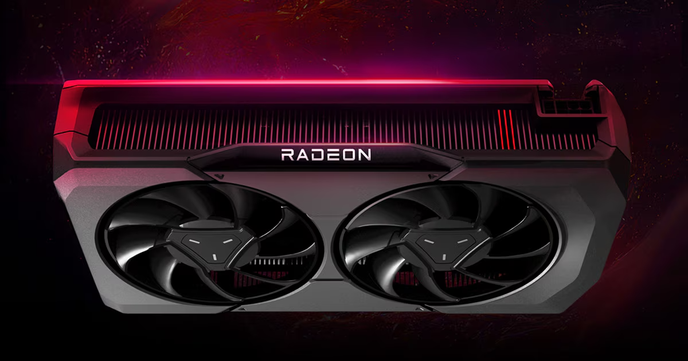

Tarjeta Gráfica (GPU)
La tarjeta gráfica, también conocida como GPU (Unidad de Procesamiento Gráfico), es un componente esencial para renderizar imágenes, videos y juegos en una computadora. Es responsable de manejar todo lo relacionado con los gráficos.

Características principales
- Núcleos CUDA/Stream Processors: Los núcleos especializados para procesamiento gráfico.
- Memoria VRAM: Memoria dedicada para almacenar texturas y datos gráficos.
- Frecuencia: La velocidad de reloj de la GPU, medida en MHz o GHz.
- Arquitectura: Define cómo está diseñada la GPU y su eficiencia.
Empresas líderes en fabricación de GPUs
Tipos de GPU
Existen diferentes tipos de GPU según su uso y rendimiento. Algunos de los más comunes son:
- GPU Integrada: Incluida en el procesador, ideal para tareas básicas.
- GPU Dedicada: Tarjeta gráfica independiente, diseñada para gaming y aplicaciones profesionales.
- GPU para Minería: Optimizada para cálculos intensivos, como la minería de criptomonedas.
Explora más
Si deseas conocer más sobre otros componentes, visita las siguientes páginas: